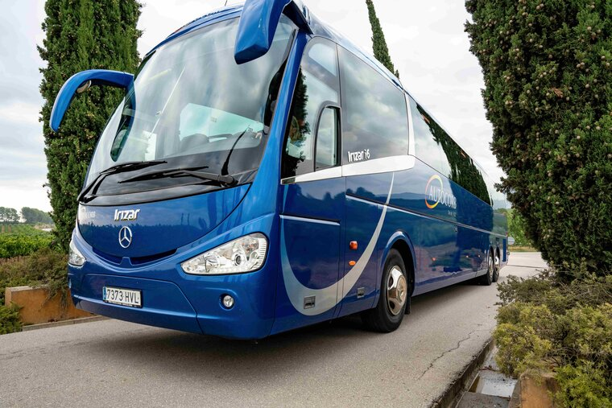
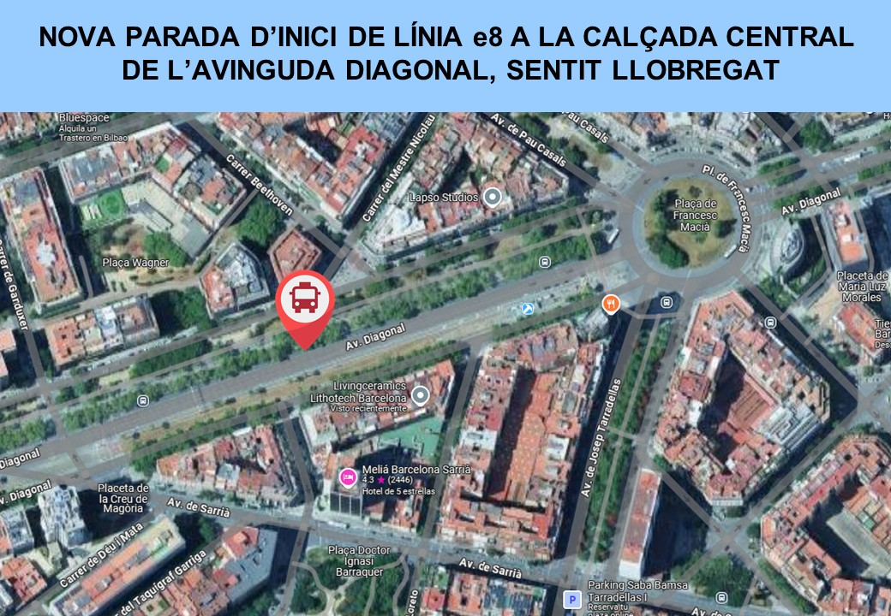
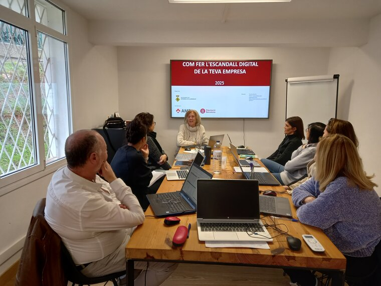

Nueva parada de inicio de la línea e8 de Autocorb

Autocorb informa que, a partir del próximo domingo 23 de febrero, la parada de inicio y final de la línea e8, situada en la calle Urgell, 229, dejará de estar operativa de forma indefinida.
Por este motivo, desde ese día, las paradas de inicio y final quedan así:
- Parada de inicio (Barcelona - Corbera): Avenida Diagonal con la calle Mestre Nicolau (delante de Catalunya Ràdio). La parada estará situada en la calzada central de la Avenida Diagonal en sentido Llobregat.
- Parada de final (Corbera - Barcelona): Plaza de Francesc Macià (en la actual parada del Bus Turístico).


En el último curso de Formación Emprendedora, se ha explorado una herramienta fundamental para todo/a emprendedor/a: el Escandall Digital. Más allá del precio de compra y venta, es necesario conocer el verdadero coste de un producto.
Si pensamos que el margen de beneficios es simplemente la diferencia entre el coste de producción (materia prima) y el precio de venta, no saldrán las cuentas. La realidad es que es necesario asumir otros costes generados para poder ofrecer el producto al cliente final.
Pero no sólo son los costes tangibles -como la materia prima, la electricidad o el alquiler, los que determinan el precio final de un producto o servicio. Existen otros componentes esenciales como la elaboración y el conocimiento que se han invertido para crearlo. Esto es especialmente importante en sectores en los que el valor añadido es muy alto, como en los servicios profesionales o en productos personalizados.
El escandallo es como una radiografía de los costes de un producto o servicio. Nos permite comprender hasta el último detalle cómo se distribuyen los recursos dentro de una empresa, facilitando la toma de decisiones informadas sobre precios, rentabilidad y estrategia empresarial. Este conocimiento es esencial para garantizar la viabilidad a largo plazo del proyecto.
Para mas información pulse aquí
Convocada la Junta Local de Seguridad para mañana 27 de febrero
Mañana jueves día 27 de febrero tendrá lugar la sesión de la Junta Local de Seguridad, que se reúne de forma ordinaria dos veces al año. El objetivo de estas sesiones es realizar balance de las actuaciones realizadas por los diferentes cuerpos policiales, analizar la situación del municipio respecto a las cuestiones de seguridad, y velar por la cooperación y coordinación del Ayuntamiento con el conjunto de fuerzas y cuerpos de seguridad que actúan en el término municipal.
La junta está presidida por la Alcaldesa y la componen el concejal de Seguridad Ciudadana así como los responsables de la Policía Local, de los Mossos d'Esquadra y de la Guardia Civil.